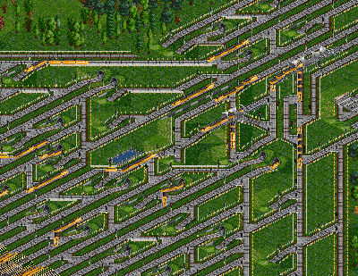
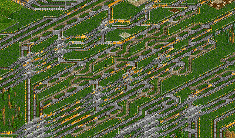
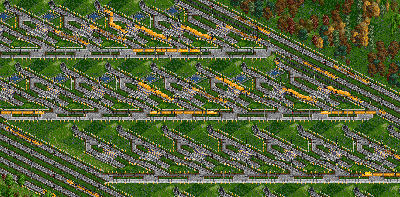
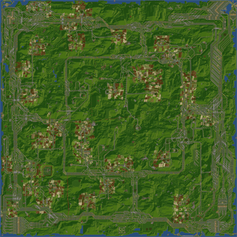

Public Server Game #124 Pimped Edition
The recently completed Public Server Game 124 is archived with about 1700 trains. Coop wouldn’t be coop if we didn’t push OpenTTD to it’s limits and that we did. Of course you can download the final savegame, take care you need r14922 or higher.

We took the game from the archive and have run if on the Pro Server for the last several weeks. We’ve been building and tweaking until we had over 2500 trains running smoothly without jams. We’ve made a staggering 8 main lines, that gives trains so many choices that a gridlock wasn’t possible. The largest station on the map is the goods drop, serving 820 trains.
Buidling challenges
During constructions a lot of challenges arised. Balanced mainline entries, backbones extending and merging traffic from the 8 mainlines to a 4 track or less side line. Especially the 8 to 4 mergers proved difficulty and after several attempts we finally ended up with a descent version that did the trick.

Station entries and exits also were challenging, to give trains lot of choices to pick platforms. Exiting the station in a smooth way and merge evenly onto the mainline.
Lot’s of tweaking was done on the goods drop entry, in order to provide choice. For some reason the outer most platforms were hardly used. By dividing traffic better over the 4 incoming tracks and providing better routing we’ve managed to make it a smooth station.

Goods drop station entry, the station services over 800 trains.


Station exit merger from the steel mill pickup and drop area.


After a lot of adjustments this was the final version of the 8 lane joiner.


Finally an overview of the whole map.

Boldy building…
As Truebrain said in game, who joined us to see the work, “You outdo yourselves everytime!” and that is what boldly building what nobody has built before is about. We admit that in the end we had to get some help from cheating, in order to get major constructions done again. But overall it turned out to be an one of a kind game, that is really awesome.
P.S. If you download the game, beware that on some PC’s it might not work anymore, because of the heavy CPU load.
Categories: Community News, ProZone, Public Server, Weekly Review
zilfondel January 21, 2009 05:28
The final map looks like a printed circuit board!
Osai January 21, 2009 13:52
very true 😀
Chris Booth December 15, 2009 18:52
how do you make those giant overview screen shots?
Hysteresis August 11, 2010 00:35
i was watching this game working away for a while and found that there was gridlock on the overflow control by the ore + coal drop/steel pick up. there is also a pile up after that station cos of the prio
http://www.tt-forums.net/viewtopic.php?f=29&t=49586
one hell of a game – i am in awe =D